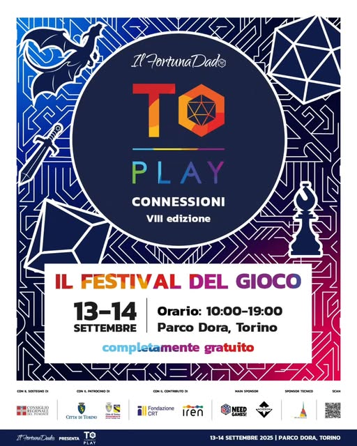

Gloria e Dadi! Cani di Odino Siam!
Il week-end del 13 e 14 Settembre 2025 si è svolta, a Torino, l’ottava edizione di “TorinoPlay” Per il secondo anno consecutivo i Cani di Odino hanno affilato le loro asce, levato le ancore e salpato verso Nord portandosi dietro manuali GDR, giochi da tavolo e progetti e giochi artigianali realizzati appositamente per l’evento. Con le Valchirie che sussurravano nel vento: Gloria e Dadi!
Territori conquistati
Quest’anno abbiamo alzato l’asticella, piantando il nostro vessillo in ben due collettivi di creativi e giocatori, dividendo le nostre forze quindi su due fronti: - Un tavolo per i giochi da tavolo con i “Creators Assemble”, - Un tavolo per i giochi di ruolo con i “Critici & Creators”
Creator Assemble
Sul fronte del gioco da tavolo abbiamo riconfermato la nostra presenza assieme ai Creators Assemble capitanati da MosquitoMan (AKA Gianni Forlastro) Alla nostra postazione potevate giocare con l’immancabile “Blood Rage” (gioco vessillo dei Cani di Odino) e “I Tiranni dell’Underdark” (titolo ormai fuori produzione) che abbiamo fatto giocare con un mazzo di nostra produzione. Ma la vera sfida per noi è stata presentare un gioco interamente fabbricato nel nostro laboratorio segreto che molto probabilmente segnerà il preludio a nuovi progetti. Ma andiamo per ordine Tramite la forgia nanica di Nefilim abbiamo realizzato una copia artigianale, in legno e stampa 3d di “I Fossi dell’Harun”. I Fossi dell’Harun è un gioco di matrice scacchistica per due giocatori. Si tratta di un meta-gioco interno all’ambientazione del gioco di ruolo “Rayn” Nella lore di questo GDR, “I fossi dell’Harun” è la forma di intrattenimento di punta nelle taverne, nelle case, tra i viandanti nei boschi e nell’Ecumene del Rayn, e rappresenta quello che il poker di dadi può rappresentare nel mondo di The Witcher. Lo abbiamo sviluppato con il consenso e l’aiuto della Casa Editrice Aristea che ci ha fornito il regolamento aggiornato e tutto il supporto necessario. Con nostra enorme sorpresa il riscontro al pubblico è stato più che entusiasmante ed è stato, al nostro tavolo, il gioco più provato. Complice sicuramente l’immediatezza dell’apprendimento delle regole e la durata media della partita sui 15/20 minuti. Semplice, appassionante e con un design retrò che ha appassionato anche chi si è seduto al tavolo con noi. Possiamo affermare che questa esperienza ha segnato una tappa importante nella nostra esperienza alle fiere e non neghiamo che l’idea di sviluppare una serie di giochi diegetici completamente artigianali potrebbe essere una via che percorreremo ancora. Oltre ai “Cani di Odino” tra le fila dei Creators Assemble vi erano: - Crane boardgame - Gianluca Battiferri - Gunslinger Jane - I Robi da tavolo - La GiocoFamiglia - La Taverna del Lupo - Manuel Rodio - Mosquitoman - Music and Boardgames - Valetutto - Vivonelkaos - Sehnsucht
Critici & Creators
Un collettivo di creators folle, nato dall’idea ancora più folle di Sweetblood’s Adventures (AKA Peppe Sanguedolce) Se qualcuno si chiede chi siano questa banda di scalmanati, i Critici & Creators si definiscono così: “Community della new wave del gioco di ruolo. Uno spazio condiviso da master, giocatori, streamer, autori e creator che trasformano il GdR in narrazione, spettacolo e cultura pop. Tra dirette, podcast, moduli originali, hack di regolamenti e contenuti digitali, diamo vita a storie che uniscono passione, performance e spirito critico, spaziando dal fantasy epico al cyberpunk, dall’indagine noir al cartoon surreale. Inclusivi, sperimentali, connessi. Qui il gioco non si ferma al tavolo: prende voce, forma e si evolve con chi lo vive.” Tramite questo gruppo i Cani hanno portato ben 3 sessioni giornaliere di gioco di ruolo diverse: La sessione dal titolo “Le Origini” dal Gioco di ruolo “Drakonia” edito dalla Gamers Hunter, narrato da Master Nefilim La sessione dal titolo “La Mappa Perduta” dal Gioco di ruolo “Martelli da Guerra Seconda Edizione” edito da Nexus negli anni 90, narrato da Master Zio Polemica. La sessione dal titolo “Richiamo di Sangue” dal Gioco di ruolo “Rayn” edito da Aristea, narrato da Master Grim. Della community dei Critici & Creators fanno parte: - I Cani di Odino - Peppe "Sweetblood" from "Sweetblood's Adventures" - Gunslinger Jane - Matteo Poropat from "La Taverna al Coniglio Mannaro" - Vik Greco from "Fallimenti Critici" - Marco "Nut" Innocenti from U-Nerd - Jeinny "Critico Caotico" Pérez - Fauno di Ruolo -Fabula Circle -D20Society - RevelTales - Zappithustra - Massimiliano Marsiglietti (Morkthulhu) - Elfi Acuti - MMGames
Le interviste ignoranti
Sono ripartite quest’anno con uno Zio Polemica in forma e spietato, il format delle “Interviste ignoranti” Un questionario di domande irriverenti e serrate poste ai Creators per rivelarne le debolezze ed i punti di forza, metterli volutamente in difficoltà ma al tempo stesso sponsorizzarne il progetto (perché alla fine siamo dei cuori di panna) Alle riprese ed al montaggio un Nefilim “one man band” che da solo riesce a gestire un sito, occuparsi del montaggio e delle riprese dei video, realizzare le customizzazioni dei giochi e si dice che riesca anche a giocare ai videogiochi. Presto sulla pagina Instagram tutte le vessazioni legate a questo format.
Tirando le fila
È stata un’edizione molto partecipata, forse anche dovuta al cambio di location rispetto allo scorso anno, più ampia, più fruibile e soprattutto NON HA PIOVUTO. Il Parco Dora è stato decisamente suggestivo per il suo sapore post-industriale e la copertura colossale che offriva in caso di pioggia, ha contribuito non poco al successo insieme anche al bel tempo che ha baciato entrambi i giorni del week end. Per noi è stato molto bello reincontrare volti noti e visi visti oltre il blue screen per tutto l’anno, conoscere e poter stringere la mano ad editori che stimiamo o addirittura trovarseli proprio come master nei giochi di ruolo che adoriamo. Vedere i volti delle persone che hanno giocato le nostre sessioni andarsene via felici ed appagati per noi non ha prezzo. Stringere rapporti e avviare progetti con altri Creators, Scrittori, Sviluppatori, darsi appuntamento alle fiere successive, confrontarsi sui giochi provati, ritrovarsi stanchi di fronte ad una pizza ci ha fatto sentire dove Odino ci ha chiesto di essere. Ed eravamo li. Forse le uniche note da migliorare riguardano la logistica: pochi bagni per il flusso di gente accorsa, la fila era perenne come perenne era la fila agli stand del cibo, anch’essi esigui per la mole di persone accorse. File di ore per accaparrarsi il pranzo. E forse un ultimo ritocco per la gestione dei tavoli da gioco potrebbe essere, per il prossimo anno, l’introduzione di un “Uomo Cartellina” che facesse funzione di coordinamento dei tavoli di gioco e di “butta dentro” nei tavoli in cui non è stato raggiunto il numero. Purtroppo, in svariate prenotazioni (essendo gratuite) qualcuno ha pensato bene di non presentarsi, sconvolgendo un po’ l’organizzazione della fiera. Quindi ricordatevi gente, se prenotate online a una sessione PRESENTATEVI o almeno AVVISATE, almeno per i vostri amichevoli Master di quartiere PLEASE! Che dire quindi, grazie ToPlay, grazie all’organizzazione, grazie agli amici e ai Creators che sono stati due giorni con noi. Grazie e al prossimo anno! “Forti venti, nebbie magiche, da Asgard le Valchirie volano!” Gloria e Dadi!
Se vuoi approfondire
Ti è piaciuto questo articolo?
Seguici sui social per non perdere i prossimi contenuti e condividi questo articolo con la tua community!